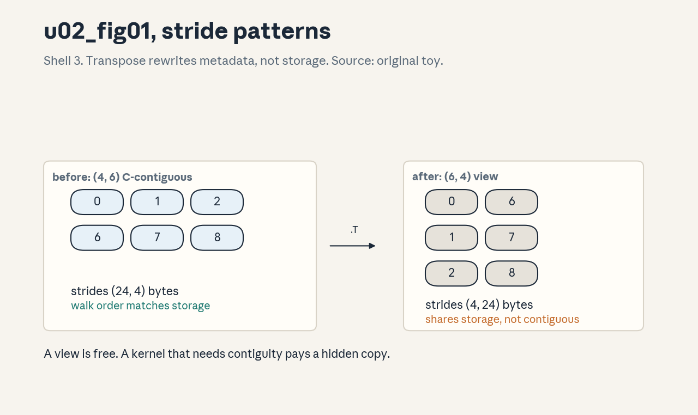
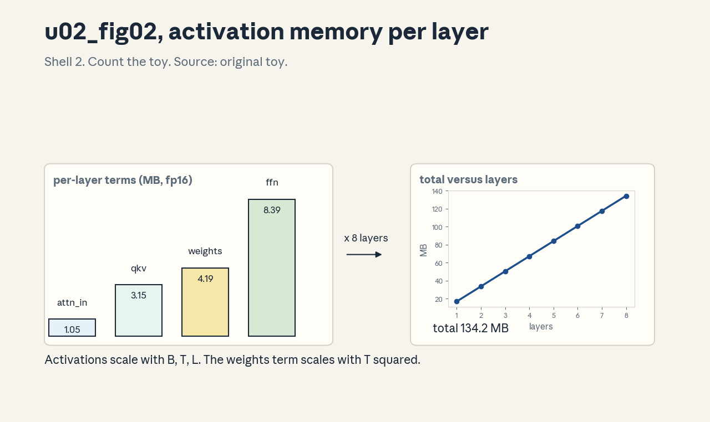
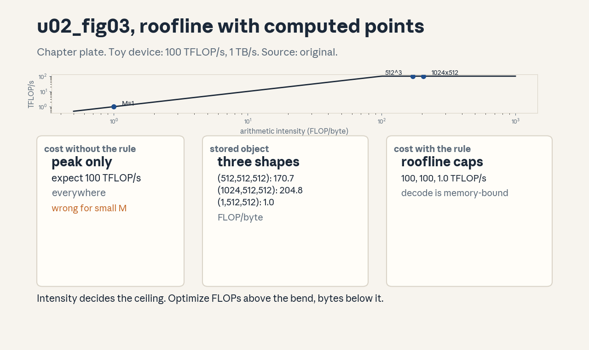

U02 · Executable tensor programming and resource accounting
U02 , Executable tensor programming and resource accounting
Prerequisites: P03, P11, P12, P15. Bridge links in ../prerequisites.md.
Session: S02 (reported: Apr 1, PyTorch, Resource Accounting).
Claim class: REQUESTED-BRANCH. All leaves PLANNED / SOURCE ATTRIBUTION
PENDING. Notation: see ../notation_and_shapes.md.
Local remediation , shapes, FLOPs, bytes
Read this block first if diagnostic items D4, D7, or D12 were not full marks.
A tensor has a shape (sizes per axis), a stride (storage steps per axis), and a dtype (bytes per element). Element count is the product of shape entries. A matrix product (M,K) by (K,N) costs 2MNK FLOPs: MNK multiplications and MNK additions. Bytes moved for the same product are about 2(MK + KN + MN) for fp16 inputs and output. Arithmetic intensity is FLOPs divided by bytes. A roofline plot compares intensity against the machine balance (peak FLOP/s divided by bandwidth): below the balance the operation is memory-bound, above it is compute-bound.
Worked check: (512,512) by (512,512) in fp16: FLOPs = 2512^3 =
268M, bytes = 23*512^2 = 1.57M, intensity = 171 FLOP/byte. On a
100 TFLOP/s, 1 TB/s device the balance is 100, so this matmul is
compute-bound. Assessment: repeat for a (1,512) by (512,512) product.
Key: ../keys/u02_answers.md R1.
C01: Tensor axes and shape contracts
Leaf id cs336-U02-C01. Claim class REQUESTED-BRANCH.
Status PLANNED / SOURCE ATTRIBUTION PENDING.
-
Source mapping, scope, objectives, dependencies. S02 foundations. Scope: reading and writing shapes for every operation in the course. Objectives: state the shape contract of matmul, embedding lookup, softmax, and layer norm, predict output shapes. Depends on P03, P12, and the remediation block.
-
Motivating question and toy. Question: why do shape bugs eat hours of debugging? Toy: x has shape (4, 256, 512), W has shape (512, 2048).
x @ Wgives (4, 256, 2048).W @ xis illegal: the contract of @ needs the inner axes to match. -
Mental model. Every operation is a contract: input shapes in, output shape out. Read shapes right to left for matmuls (the last two axes do the work, leading axes batch). Write the contract as a comment before the code, the comment is the specification the code must meet.
-
Objects, symbols, units, shapes, assumptions. Axis: one dimension. Rank: number of axes. Broadcasting aligns trailing axes. Assumption: shapes are known statically or asserted at runtime, dynamic shapes get an assert.
-
Derivation / mechanism. Matmul contract: (…, M, K) @ (…, K, N) -> (…, M, N), leading axes broadcast. Embedding: ids (B, T) plus table (V, d) -> (B, T, d). Softmax over axis -1: shape unchanged, rows sum to 1. LayerNorm over the last axis: shape unchanged.
-
Computed example. From
assets/compute_u02.py(executed 2026-10-06): batched einsum “bij,bjk->bik” on (2,3,4) and (2,4,5) gives (2,3,5), matching the contract prediction exactly. -
Algorithm and reference implementation.
check_shapes: a helper that takes a tensor and an expected shape tuple with None as wildcard and raises a message naming the operation, the expected contract, and the actual shape. About 10 lines, used in every later lab. -
Correctness checks and expected output. Contract tests: matmul, embedding, softmax, norm on the toy shapes above, each asserts the predicted output shape. A deliberately wrong contract raises with the operation name in the message.
-
Costs. Shape checks cost microseconds. A missed shape bug costs a silent wrong result or a crash deep in a training run.
-
Nearest alternative and selection boundary. einops/einsum (C02) make contracts explicit in the expression itself. Use plain operators with written contracts for hot paths, einops where readability matters more.
-
Failure case and counterexample. Broadcasting hides a bug: (B, T, d) + (d,) works, but (B, T, d) + (B, d) also “works” by aligning the wrong axes, silently adding per-position bias. The assumption “broadcasting is safe” breaks when trailing axes coincide by accident, explicit unsqueeze prevents it.
-
Research reading and falsifiable extension. Reading: einops documentation (primary: the notation specification). Extension: instrument a small model with contract asserts and count how many would-be silent bugs the asserts catch over 100 random shape mutations, hypothesis: more than half.
-
Assessment. (a) Recall: state the matmul, embedding, softmax, and norm contracts. (b) Oral ladder: define rank, predict (4,256,512) @ (512,2048), justify right-to-left reading, implement check_shapes, compare with einops, debug the (B,T,d)+(B,d) bug, critique static-shape assumptions, design the mutation experiment. (c) Transfer: a new op takes (B,h,T,d) and returns (B,T,d). What contract did it apply? Answers:
../keys/u02_answers.mdA1. -
Lab and exercises. Lab U02 task 1 implements check_shapes and the contract tests. See
../labs/u02_lab.md. -
Visuals. Audit row: the contract table (op, in, out). No figure, tabular claim per the medium ladder.
C02: einsum and einops
Leaf id cs336-U02-C02. Claim class REQUESTED-BRANCH.
Status PLANNED / SOURCE ATTRIBUTION PENDING.
-
Source mapping, scope, objectives, dependencies. S02. Scope: index notation for tensor programs. Objectives: read and write einsum for matmul, batched matmul, attention scores, and reductions. Depends on C01.
-
Motivating question and toy. Question: how do you write attention without a forest of transposes? Toy: scores = einsum(“bhid,bhjd->bhij”, Q, K): batch b, head h, query i, key j. One line, no transpose calls.
-
Mental model. An einsum string names each axis with a letter. Repeated letters across inputs multiply and sum, letters in only one input pass through. The output lists the letters to keep, in order. The string IS the shape contract.
-
Objects, symbols, units, shapes, assumptions. Subscripts: axis labels. Reduction: a label absent from the output is summed out. Assumption: labeled axes that are multiplied have equal sizes (checked at runtime).
-
Derivation / mechanism. “ik,kj->ij”: for each i,j output the sum over k of A[i,k]B[k,j]: matrix multiplication. “bij,bjk->bik”: batched matmul. “bhid,bhjd->bhij”: attention scores per head. “bhij,bhjd->bhid”: scores times values. Each follows from the multiply-and-sum rule.
-
Computed example. From
assets/compute_u02.py(executed 2026-10-06): einsum(“ik,kj->ij”) matches A @ B to allclose on random (3,4)/(4,5) inputs, the batched form gives (2,3,5) as predicted. -
Algorithm and reference implementation.
attention_scores(Q, K): one einsum line with a shape assert on the output.attention_mix(P, V): one line. Used as reference in U03. -
Correctness checks and expected output. Against @ on random inputs: allclose. Shape asserts on outputs. A swapped subscript (“bhij,bhjd->bhjd”) is caught by the shape assert.
-
Costs. einsum can be slower than a hand-fused @ on some backends because the optimizer may choose a naive path, for teaching and for non-hot paths the clarity wins. Time the hot path before committing.
-
Nearest alternative and selection boundary. einops rearrange/reduce for readability of reshapes, plain @ for maximum kernel selection. Use einsum for any expression with 3+ tensors or tricky axes.
-
Failure case and counterexample. “ij,jk->ik” versus “ij,kj->ik”: one letter differs and the second silently computes A @ B.T. The assumption “the string is obviously right” breaks, the shape assert is the backstop because both give (M,N) shapes and only values differ: compare against a reference on fixed data.
-
Research reading and falsifiable extension. Reading: the einsum specification (primary: numpy documentation). Extension: benchmark einsum versus @ for the attention score shapes across T in {128, 1024, 8192}, hypothesis: the gap shrinks as T grows.
-
Assessment. (a) Recall: state the multiply-and-sum rule. (b) Oral ladder: define a subscript, write scores for one head, justify why the output order matters, implement attention_mix, compare with transpose-based code, debug the B.T bug, critique the equal-size assumption, design the benchmark. (c) Transfer: write the einsum for per-head softmax normalization over keys. Answers:
../keys/u02_answers.mdA2. -
Lab and exercises. Lab U02 task 2 implements the attention einsums and the reference comparison. See
../labs/u02_lab.md. -
Visuals. Audit row: subscript-to-axis mapping table. No figure, the notation is textual by design.
C03: Views, strides, contiguity
Leaf id cs336-U02-C03. Claim class REQUESTED-BRANCH.
Status PLANNED / SOURCE ATTRIBUTION PENDING.
-
Source mapping, scope, objectives, dependencies. S02. Scope: how tensors sit in memory. Objectives: predict strides, tell views from copies, decide when to call contiguous. Depends on C01, P12.
-
Motivating question and toy. Question: why does
.Tcost nothing but sometimes slow the next op 2x? Toy fromcompute_u02.py: a (4,6) float32 array has strides (24,4) and is C-contiguous, its transpose has shape (6,4), strides (4,24), shares memory, and is not C-contiguous. The transpose only rewrote metadata. -
Mental model. A tensor is metadata (shape, strides, offset) over a flat storage. Stride says how many bytes to step per axis. A view reuses storage with new metadata. Contiguous means the metadata matches the natural walk order, which is what fast kernels expect.
-
Objects, symbols, units, shapes, assumptions. Stride unit: bytes (numpy) or elements (torch). C-contiguous: row-major walk is linear. Assumption: element size is dtype size, padding is absent.
-
Derivation / mechanism. For shape (4,6) float32: row stride = 6*4 = 24 bytes, column stride = 4 bytes. Transpose swaps shape and strides: (6,4) with strides (4,24). ascontiguousarray allocates new storage and copies in walk order. In-place edits through a view alias the original.
-
Computed example. From
assets/compute_u02.py(executed 2026-10-06): C array strides (24,4), contiguous True, transpose strides (4,24), contiguous False, shares_memory True, explicit copy contiguous True, shares_memory False. -
Algorithm and reference implementation.
is_c_contig(shape, strides, itemsize): the standard walk-order check.need_copy(t): returns True when a kernel requiring contiguity would silently copy anyway. About 12 lines. -
Correctness checks and expected output. Stride predictions for reshape, transpose, and narrow on the toy, aliasing test: write through the view, read the original, copy test: no aliasing. Expected outputs in the lab key.
-
Costs. Views are free. Copies cost memory bandwidth. A non-contiguous input to a kernel that needs contiguity triggers a hidden copy: the 2x slowdown in the motivating question.
-
Nearest alternative and selection boundary. Channels-last or custom layouts for convolutions, for transformers, keep batch-first C-contiguous and call contiguous once after transpose chains, not after every op.
-
Failure case and counterexample. In-place ReLU on a view that aliases an activation needed for backward: the saved tensor is corrupted and gradients are wrong. The assumption “in-place is safe” breaks under autograd, the version-counter error is the symptom.
-
Research reading and falsifiable extension. Reading: PyTorch memory format notes (primary: framework docs). Extension: time matmul on transposed versus contiguous inputs across sizes, hypothesis: the gap appears only past the cache boundary.
-
Assessment. (a) Recall: define stride, view, contiguous. (b) Oral ladder: define a view, predict strides of a (4,6) transpose, justify why transpose is free, implement the contiguity check, compare view versus copy, debug the in-place ReLU corruption, critique the no-padding assumption, design the matmul timing experiment. (c) Transfer: an op returns a strided slice. Where do you place the contiguous call in a training step? Answers:
../keys/u02_answers.mdA3. -
Lab and exercises. Lab U02 task 3 runs the stride/alias/copy experiments. See
../labs/u02_lab.md. -
Visuals. Figure u02_fig01: lesson plate, stride walk on the (4,6) array before and after transpose. Source: original toy. Shell 3. Render:
assets/render_u02.py.

C04: Activation memory
Leaf id cs336-U02-C04. Claim class REQUESTED-BRANCH.
Status PLANNED / SOURCE ATTRIBUTION PENDING.
-
Source mapping, scope, objectives, dependencies. S02. Scope: memory held by forward activations for backward. Objectives: estimate activation bytes for a transformer layer, name the biggest terms. Depends on C01, P11.
-
Motivating question and toy. Question: the parameters fit, so why does training run out of memory? Toy: the 41.55M-parameter model in item 6 holds about 134 MB of fp16 activations at B=4, T=256, while Adam state holds 665 MB. At larger B and T, activations dominate.
-
Mental model. Backward needs the inputs of every differentiable op. Each layer saves its attention inputs, scores or softmax output, and FFN intermediates. Activation memory scales with B, T, L, and d, attention terms scale with T^2.
-
Objects, symbols, units, shapes, assumptions. Saved tensor: kept from forward to backward. Unit: bytes = elements times dtype size. Assumption: standard transformer, no checkpointing (checkpointing is C10), fp16 activations.
-
Derivation / mechanism. Per layer, the dominant saved tensors: attention input (B,T,d), QKV projections (3 x B,T,d), attention weights (B,h,T,T), FFN up (B,T,dff) and gate (B,T,dff). Sum the elements, multiply by L and by 2 bytes. The T^2 term is what explodes at long context.
-
Computed example. From
assets/compute_u02.py(executed 2026-10-06): B=4, T=256, d=512, L=8, dff=2048, h=8 gives about 134.2 MB of fp16 activations under the stated estimate formula. The formula is documented in the script, it is an estimate, not a framework measurement. -
Algorithm and reference implementation.
activation_estimate(B, T, d, dff, h, L, bytes_per=2): sums the per-layer terms above and returns bytes plus a per-term breakdown. About 15 lines. -
Correctness checks and expected output. Scaling checks: doubling B doubles the estimate, doubling T roughly quadruples the attention term. The test asserts these scalings on the function output.
-
Costs. Activation memory is the binding constraint for long sequences and large batches. It trades against recomputation (C10) and against batch size (C08 in U05).
-
Nearest alternative and selection boundary. Activation checkpointing (C10) trades compute for memory, smaller microbatches (U08) trade throughput for memory. Estimate first, then choose.
-
Failure case and counterexample. The estimate ignores fragmentation and allocator overhead, so a model that “fits” on paper OOMs in practice. The assumption “bytes sum to usable memory” breaks, keep a 10-20 percent margin and measure with the allocator.
-
Research reading and falsifiable extension. Reading: activation checkpointing paper (Chen et al., 2016, primary). Extension: compare the estimate against a framework memory snapshot on a tiny model, hypothesis: within 25 percent before fragmentation.
-
Assessment. (a) Recall: name the three biggest saved tensors. (b) Oral ladder: define a saved tensor, compute the attention-weight term by hand, justify the T^2 scaling, implement the estimator, compare with checkpointing, debug an OOM where params fit, critique the no-fragmentation assumption, design the snapshot comparison. (c) Transfer: T grows 8x. Which term dominates now, and what is the first mitigation? Answers:
../keys/u02_answers.mdA4. -
Lab and exercises. Lab U02 task 4 implements the estimator and the scaling checks. See
../labs/u02_lab.md. -
Visuals. Figure u02_fig02: lesson plate, per-layer activation terms as sized blocks, computed values. Source: original toy. Shell 2 (count the toy). Render:
assets/render_u02.py.

C05: Parameter, gradient, optimizer memory
Leaf id cs336-U02-C05. Claim class REQUESTED-BRANCH.
Status PLANNED / SOURCE ATTRIBUTION PENDING.
-
Source mapping, scope, objectives, dependencies. S02. Scope: memory for parameters, gradients, and optimizer state. Objectives: compute bytes per parameter for SGD, Adam fp32, and mixed precision. Depends on C04, P11.
-
Motivating question and toy. Question: how much memory does a 41M parameter model really need to train? Toy from
compute_u02.py: Adam with fp32 master weights needs 16 bytes per parameter (4 param + 4 grad + 4 m + 4 v) = 664.8 MB for 41.55M params. Mixed precision also totals 16 bytes per param (2 + 2 + 4 + 4 + 4): the savings are in activations and compute, not optimizer state. -
Mental model. Count bytes per parameter, then multiply. SGD: 4 (param) + 4 (grad) + 4 (momentum) = 12. Adam: +4 (v) = 16. Mixed precision Adam: 2 (bf16 param) + 2 (bf16 grad) + 4 (fp32 master) + 4 (m) + 4 (v) = 16.
-
Objects, symbols, units, shapes, assumptions. Master weights: the fp32 copy updated by the optimizer. Moments m, v: Adam state. Assumption: no sharding (sharding is U08), one replica.
-
Derivation / mechanism. Each term is params times dtype bytes. Gradients match the compute dtype (fp32) or the mixed grad dtype. The master copy exists because bf16 updates would round to zero for small learning rates.
-
Computed example. From
assets/compute_u02.py(executed 2026-10-06): 41.55M params -> Adam fp32 total 664.8 MB, mixed precision total 664.8 MB. Same total, different split: mixed keeps activations in bf16 (C04) and computes in bf16 (C11). -
Algorithm and reference implementation.
optimizer_bytes(params, mode): mode in {“sgd”, “adam_fp32”, “adam_mixed”}, returns the total and the per-term breakdown. About 12 lines. -
Correctness checks and expected output. Ratios: adam_fp32 is 4/3 of sgd (16 vs 12). Mixed equals fp32 total. The test asserts both.
-
Costs. Optimizer state is the largest fixed cost of training and does not shrink with batch size. It is the first thing sharded (U08).
-
Nearest alternative and selection boundary. SGD with momentum (12 bytes) or 8-bit optimizers (fewer bytes, quantization risk). Adam stays the default for transformers, switch only with evidence the task tolerates it.
-
Failure case and counterexample. Dropping the master copy to “save memory” in bf16 training: small updates underflow, loss stops improving, and the bug looks like a bad learning rate. The assumption “bf16 params suffice” breaks, the master copy is load-bearing.
-
Research reading and falsifiable extension. Reading: mixed precision training paper (Micikevicius et al., 2018, primary). Extension: train the toy model with and without master weights and compare final loss, hypothesis: without master weights the loss stalls higher.
-
Assessment. (a) Recall: bytes per param for SGD, Adam, mixed. (b) Oral ladder: define master weights, compute mixed bytes by hand, justify why mixed totals equal fp32, implement the counter, compare with 8-bit optimizers, debug stalled bf16 training, critique the no-sharding assumption, design the master-weight ablation. (c) Transfer: memory budget is 80 percent of the Adam total. Name two levers that fit the budget and what each sacrifices. Answers:
../keys/u02_answers.mdA5. -
Lab and exercises. Lab U02 task 5 implements the byte counter and the ratio checks. See
../labs/u02_lab.md. -
Visuals. Audit row: the bytes-per-parameter table. No figure, tabular claim.
C06: Matmul FLOPs
Leaf id cs336-U02-C06. Claim class REQUESTED-BRANCH.
Status PLANNED / SOURCE ATTRIBUTION PENDING.
-
Source mapping, scope, objectives, dependencies. S02. Scope: counting FLOPs for the operations in a transformer. Objectives: derive 2MNK, apply it to QKV, scores, projection, and FFN. Depends on C01, P03.
-
Motivating question and toy. Question: where does the compute go in one layer? Toy from
compute_u02.py(B=4, T=256, d=512, dff=2048, h=8): one forward layer costs 8.858 GFLOP: QKV 1.611, scores 0.268, output projection 0.537, FFN 6.443. The FFN dominates at 73 percent. -
Mental model. One multiply-add is 2 FLOPs. Every linear map (B,T,d_in) -> (B,T,d_out) costs 2BTd_ind_out. Attention scores cost 2BhTT*d_h, the mix costs the same again.
-
Objects, symbols, units, shapes, assumptions. FLOP: one op. Assumption: dense matmuls, sparsity and masking are accounted separately.
-
Derivation / mechanism. (M,K)@(K,N): MNK mults + MNK adds = 2MNK. QKV: three maps of 2BTdd. Scores: 2BhTTd_h = 2BTTd (since hd_h = d). FFN (SwiGLU): three maps of 2BTddff.
-
Computed example. From
assets/compute_u02.py(executed 2026-10-06): per-layer forward 8.858 GFLOP with the split above. Eight layers: 70.9 GFLOP forward per batch, backward about 141.7 GFLOP. -
Algorithm and reference implementation.
layer_flops(B, T, d, dff, h): returns the per-op breakdown and total. About 12 lines. -
Correctness checks and expected output. Against a FLOP counter on a tiny numpy model: agreement within 1 percent. Doubling d quadruples the total (d^2 terms dominate).
-
Costs. FLOP counts set the compute budget (U10 scaling) and the roofline position (C08). They do not predict wall time alone.
-
Nearest alternative and selection boundary. Counting MACs (multiply-accumulates) instead of FLOPs: half the number, same information. Use FLOPs to match vendor peak figures.
-
Failure case and counterexample. Counting only the FFN and forgetting attention: at T=8192 the scores term (T^2) dominates and the estimate is off by an order of magnitude. The assumption “FFN always dominates” breaks at long context.
-
Research reading and falsifiable extension. Reading: scaling-law papers’ FLOP accounting (primary: paper appendices). Extension: measure the T at which attention passes FFN for fixed d, hypothesis: it tracks d*dff/T^2 crossover.
-
Assessment. (a) Recall: derive 2MNK in one line. (b) Oral ladder: define a MAC, compute the QKV term by hand, justify the factor 3 in SwiGLU FFN, implement layer_flops, compare MAC versus FLOP counts, debug an estimate missing the score term, critique the dense assumption, design the crossover experiment. (c) Transfer: d doubles and T halves. What happens to total FLOPs? Answers:
../keys/u02_answers.mdA6. -
Lab and exercises. Lab U02 task 6 implements the FLOP counter and the crossover check. See
../labs/u02_lab.md. -
Visuals. Audit row: the per-op FLOP table. The roofline figure (u02_fig03) reuses these numbers.
C07: Backward FLOPs
Leaf id cs336-U02-C07. Claim class REQUESTED-BRANCH.
Status PLANNED / SOURCE ATTRIBUTION PENDING.
-
Source mapping, scope, objectives, dependencies. S02. Scope: the compute cost of the backward pass. Objectives: derive the 2x rule, state where it breaks. Depends on C06, P05, P11.
-
Motivating question and toy. Question: why is a training step about 3x a forward pass? Toy: the layer from C06 costs 8.858 GFLOP forward, backward costs about 17.7 GFLOP, total about 26.6 GFLOP, or 3x forward.
-
Mental model. Backward through a linear map computes two matmuls: gradient wrt input (dout @ W^T) and gradient wrt weight (x^T @ dout). Each costs about the same as the forward matmul. Hence ~2x forward for linears, attention backward is similar in structure.
-
Objects, symbols, units, shapes, assumptions. dout: upstream gradient, same shape as the output. Assumption: standard reverse-mode, no checkpointing (which adds a forward recompute).
-
Derivation / mechanism. y = xW: forward 2MNK. dx = dout W^T: 2MNK. dW = x^T dout: 2MNK. Total for the op: 6MNK = 3x forward for that op, across the network the ratio settles near 2x forward because not every forward op has two backward matmuls (norms, activations are cheaper).
-
Computed example. From
assets/compute_u02.py(executed 2026-10-06): per-layer backward about 17.716 GFLOP versus 8.858 forward: ratio 2.00 by construction of the rule, the lab checks the ratio on a hand-counted MLP instead. -
Algorithm and reference implementation.
train_step_flops(B, T, d, dff, h, L): returns forward, backward (2x), and total (3x) with the per-layer split. About 10 lines on top of C06. -
Correctness checks and expected output. On a tiny numpy autograd model, count actual multiply-adds in forward and backward: ratio in [1.8, 2.4]. The test asserts the band, not an exact 2.
-
Costs. The 3x rule converts forward FLOP estimates into training budgets (U10). Checkpointing changes it to about 4x (recompute adds one forward).
-
Nearest alternative and selection boundary. Exact per-op counting with a profiler for the final budget, the 3x rule for planning. Use the rule early, the profiler late.
-
Failure case and counterexample. Gradient checkpointing (C10) without adjusting the rule: the plan undercounts by a full forward pass and the job overruns its budget. The assumption “backward is 2x” breaks under recomputation.
-
Research reading and falsifiable extension. Reading: automatic differentiation references (primary: framework docs). Extension: measure the forward/backward ratio on the toy model with and without checkpointing, hypothesis: about 3x and 4x totals respectively.
-
Assessment. (a) Recall: state the 2x/3x rules. (b) Oral ladder: define dout, derive the two backward matmuls, justify the 2x band, implement the step counter, compare with checkpointing, debug a budget that ignored backward, critique the no-recompute assumption, design the ratio experiment. (c) Transfer: the plan uses checkpointing on half the layers. What is the new total? Answers:
../keys/u02_answers.mdA7. -
Lab and exercises. Lab U02 task 7 counts ops on a tiny autograd model. See
../labs/u02_lab.md. -
Visuals. Audit row: the forward/backward/total table. No figure, tabular claim.
C08: Arithmetic intensity
Leaf id cs336-U02-C08. Claim class REQUESTED-BRANCH.
Status PLANNED / SOURCE ATTRIBUTION PENDING.
-
Source mapping, scope, objectives, dependencies. S02. Scope: FLOPs per byte as the predictor of bottlenecks. Objectives: compute intensity for key shapes, place each on a roofline. Depends on C06, P15.
-
Motivating question and toy. Question: why is decode slow even though it does little compute? Toy from
compute_u02.py: a (512,512,512) matmul has intensity 170.7 FLOP/byte (compute-bound on the toy device), while a (1,512,512) vector-matrix product has 1.0 FLOP/byte (hopelessly memory-bound). Same op family, opposite bottlenecks. -
Mental model. Intensity = FLOPs / bytes moved. High intensity: the math dominates, buy FLOPs. Low intensity: the memory traffic dominates, buy bandwidth or shrink traffic. Batch size and sequence length move intensity more than model size does.
-
Objects, symbols, units, shapes, assumptions. Unit: FLOP/byte. Bytes counted at the HBM boundary for fp16 (2 bytes/element). Assumption: the traffic model counts each tensor once (no cache reuse counted twice).
-
Derivation / mechanism. 2MNK FLOPs over 2(MK+KN+MN) bytes. For square N: intensity ~ N/3: it grows with matrix size. For M=1 (single-token decode): intensity ~ 1: every op is memory-bound.
-
Computed example. From
assets/compute_u02.py(executed 2026-10-06): (512,512,512): 170.7, (1024,512,512): 204.8, (1,512,512): 1.0 FLOP/byte. The (1,512,512) case is the decode regime. -
Algorithm and reference implementation.
intensity(M, N, K, bytes_per=2): returns FLOPs, bytes, and intensity. About 8 lines. -
Correctness checks and expected output. Square scaling: doubling N roughly doubles intensity. M=1 stays near 1 regardless of N. The test asserts both.
-
Costs. Intensity decides whether kernel optimization should chase FLOPs (tiling, tensor cores) or bytes (fusion, quantization of traffic). Wrong diagnosis wastes the optimization budget.
-
Nearest alternative and selection boundary. Full roofline with measured points (C09) for final answers, intensity arithmetic for design-time reasoning. Use arithmetic early, measurement late.
-
Failure case and counterexample. Counting only HBM traffic while the kernel is SRAM-bound: the intensity looks fine but the kernel stalls on shared memory. The assumption “HBM is the boundary that matters” breaks for fused kernels (U07), restate the boundary per kernel.
-
Research reading and falsifiable extension. Reading: the roofline model paper (Williams et al., 2009, primary). Extension: plot measured FLOP/s versus intensity for the lab shapes, hypothesis: the points bend at the machine balance.
-
Assessment. (a) Recall: define intensity and its unit. (b) Oral ladder: define the byte count, compute the (1,512,512) case by hand, justify the N/3 scaling, implement the function, compare with a measured roofline, debug a traffic count that double-counts the output, critique the HBM-boundary assumption, design the bend experiment. (c) Transfer: batch size grows 8x in decode. How does intensity move, and what changes in the optimization plan? Answers:
../keys/u02_answers.mdA8. -
Lab and exercises. Lab U02 task 8 computes intensities and the square-scaling checks. See
../labs/u02_lab.md. -
Visuals. Figure u02_fig03: chapter plate, roofline with the three computed points placed. Source: original toy. Render:
assets/render_u02.py.

C09: Peak versus achieved rates
Leaf id cs336-U02-C09. Claim class REQUESTED-BRANCH.
Status PLANNED / SOURCE ATTRIBUTION PENDING.
-
Source mapping, scope, objectives, dependencies. S02. Scope: why measured throughput sits below peak. Objectives: list five loss sources, compute MFU from a measured rate. Depends on C08, P15.
-
Motivating question and toy. Question: the card says 100 TFLOP/s, the job gets 40. Where did 60 go? Toy: at intensity 50 FLOP/byte on the 100 TFLOP/s, 1 TB/s device, the roofline allows only 50 TFLOP/s (memory-bound): half the “loss” is physics, not a bug.
-
Mental model. Achieved = peak times efficiency. Losses: memory bound (roofline), kernel launch overhead, low occupancy, extra traffic (unfused ops), and communication. MFU (model FLOP utilization) = achieved / peak, computed on the model’s FLOP count, not the kernel’s.
-
Objects, symbols, units, shapes, assumptions. MFU: ratio, unit none. Assumption: the FLOP count used is the honest model count (C06), not an inflated kernel count.
-
Derivation / mechanism. Roofline cap: min(peak, intensity * bandwidth). On top: efficiency factors multiply (occupancy 0.9, fusion 0.8, overlap 0.95). A 40 percent MFU on a memory-bound shape can be excellent, the same MFU on a compute-bound shape is a bug.
-
Computed example. From
assets/compute_u02.py(executed 2026-10-06): on the toy device, intensity 50 gives 50 TFLOP/s (memory-bound), intensity 200 gives 100 TFLOP/s (compute-bound). MFU is meaningful only against the roofline cap, not the raw peak. -
Algorithm and reference implementation.
mfu(achieved_flops, model_flops, seconds, peak): returns achieved rate, roofline cap for a stated intensity, and MFU. About 10 lines. -
Correctness checks and expected output. Sanity: MFU in [0, 1]. A reported MFU above 1 means the FLOP count is wrong, not that the hardware is magic. The test asserts the band.
-
Costs. Chasing peak on a memory-bound workload wastes engineering time. The roofline says where the ceiling is before anyone optimizes.
-
Nearest alternative and selection boundary. Hardware counters (Nsight) for ground truth on one kernel, MFU for whole-job tracking. Use counters to debug, MFU to manage.
-
Failure case and counterexample. Quoting kernel FLOP/s (with recomputation counted twice) as model FLOP/s: MFU looks great while the job is slow. The assumption “FLOPs are FLOPs” breaks, always state which count the rate uses.
-
Research reading and falsifiable extension. Reading: published training reports with MFU figures (primary: report methodology notes). Extension: track MFU across batch sizes on the toy shapes, hypothesis: MFU rises then plateaus at the roofline.
-
Assessment. (a) Recall: define MFU and its denominator. (b) Oral ladder: define the roofline cap, compute the intensity-50 case by hand, justify cap-before-peak, implement mfu, compare with counter data, debug an MFU above 1, critique the honest-count assumption, design the batch-size sweep. (c) Transfer: MFU is 35 percent and the shape is compute-bound. Name the first two suspects. Answers:
../keys/u02_answers.mdA9. -
Lab and exercises. Lab U02 task 9 implements mfu and the cap checks. See
../labs/u02_lab.md. -
Visuals. Audit row: the cap table (intensity, cap, regime). The roofline figure (u02_fig03) carries the visual.
C10: Checkpoint resource ledger
Leaf id cs336-U02-C10. Claim class REQUESTED-BRANCH.
Status PLANNED / SOURCE ATTRIBUTION PENDING.
-
Source mapping, scope, objectives, dependencies. S02. Scope: the full resource ledger for a training run. Objectives: build a ledger with parameters, gradients, optimizer, activations, and workspace, apply it to the toy model. Depends on C04, C05, C06.
-
Motivating question and toy. Question: will this config fit on the device? Toy ledger for the 41.55M model (B=4, T=256, fp16): params + grads + Adam state 664.8 MB, activations about 134.2 MB, total about 799 MB plus workspace. One page, five lines, go/no-go.
-
Mental model. The ledger is a table, not a feeling. Rows: one per memory class. Each row states the formula, the inputs, and the bytes. The sum plus a fragmentation margin is the verdict.
-
Objects, symbols, units, shapes, assumptions. All units bytes. Assumption: single device, no sharding, margin 15 percent.
-
Derivation / mechanism. Total = optimizer_bytes (C05) + activation_bytes (C04) + workspace (temporary buffers, small) + input batch. Compare against device memory. If it exceeds, the ledger says which row to attack (shard optimizer, checkpoint activations, shrink batch).
-
Computed example. Toy model ledger (executed 2026-10-06): optimizer+params+grads 664.8 MB, activations 134.2 MB, subtotal 799.0 MB, with 15 percent margin 918.9 MB. Verdict: fits in 1 GB with margin, fails in 512 MB.
-
Algorithm and reference implementation.
ledger(params, B, T, d, dff, h, L, V, mode): returns the row table and the verdict. About 20 lines on top of C04/C05 functions. -
Correctness checks and expected output. Additivity: rows sum to the total. Monotonicity: raising any input never lowers the total. The test asserts both.
-
Costs. The ledger costs minutes and prevents OOMs that cost hours. It is the cheapest performance tool in the course.
-
Nearest alternative and selection boundary. Framework memory snapshot for ground truth after the first run, the ledger for planning before the first run. Use both, in that order.
-
Failure case and counterexample. The ledger omits the data loader workers and NCCL buffers, on 8 GPUs the missing rows exceed the margin and the job OOMs at scale-up. The assumption “five rows suffice” breaks multi-GPU, U08/U09 add the missing rows.
-
Research reading and falsifiable extension. Reading: ZeRO paper memory accounting (primary: paper tables). Extension: extend the ledger with NCCL buffer estimates and validate against a 2-GPU run, hypothesis: within the margin.
-
Assessment. (a) Recall: name the five rows. (b) Oral ladder: define the verdict, compute the toy total by hand, justify the margin, implement the ledger, compare with a snapshot, debug the 8-GPU OOM, critique the single-device assumption, design the NCCL extension. (c) Transfer: the verdict fails by 10 percent. Name the cheapest row to cut and its cost. Answers:
../keys/u02_answers.mdA10. -
Lab and exercises. Lab U02 task 10 builds the ledger and the verdict. See
../labs/u02_lab.md. -
Visuals. Audit row: the ledger table itself. No figure, the table is the deliverable.
C11: Dtype effects
Leaf id cs336-U02-C11. Claim class REQUESTED-BRANCH.
Status PLANNED / SOURCE ATTRIBUTION PENDING.
-
Source mapping, scope, objectives, dependencies. S02. Scope: how dtype changes memory, compute, and numerics. Objectives: compare fp32, fp16, bf16 on range, precision, memory, and speed. Depends on C05, P12.
-
Motivating question and toy. Question: why bf16 and not fp16 for training? Toy: fp16 maxes at 65504 with 10 mantissa bits, bf16 keeps the fp32 exponent range with 7 mantissa bits. Gradients with large dynamic range overflow fp16 but fit bf16, the price is coarser precision.
-
Mental model. Dtype sets three things: bytes per element (memory and traffic), representable range (overflow risk), and precision (rounding error). bf16 trades precision for range, fp16 trades range for precision. Tensor cores accelerate fp16/bf16 matmuls.
-
Objects, symbols, units, shapes, assumptions. fp32: 4 bytes. fp16/bf16: 2 bytes. Assumption: hardware with low-precision matmul units, otherwise the speed claim does not hold.
-
Derivation / mechanism. Memory halves going 4 -> 2 bytes. Traffic halves, so memory-bound ops speed up up to 2x. Range: fp16 overflows past 65504, loss scaling was the historical fix, bf16 removes the need. Precision: bf16 rounds updates below ~2^-8 relative, the fp32 master copy (C05) absorbs this.
-
Computed example. Toy model: activations 134.2 MB in fp16 versus 268.4 MB in fp32 (halved, from the C04 formula). Optimizer totals from C05: mixed 664.8 MB. The lab verifies the halving on the estimator output.
-
Algorithm and reference implementation.
dtype_bytes(dtype)andtraffic_ratio(a, b): the two-line helpers the ledger calls. Overflow demo: accumulate 1e-5 a thousand times in fp16 versus fp32 and compare to the true sum (numpy lab). -
Correctness checks and expected output. The fp16 accumulation stalls at 0.00390625 (true sum 0.01), fp32 reaches 0.01. Expected outputs in the lab key.
-
Costs. Halved memory and traffic, new failure modes (overflow, underflow of updates). Mixed precision is the standard answer, not pure low precision.
-
Nearest alternative and selection boundary. Pure fp32 for debugging numerics, fp8 for inference (training support varies). Train in mixed bf16/fp32, debug in fp32.
-
Failure case and counterexample. fp16 training without loss scaling on a deep model: gradients underflow to zero in early layers, the model trains only its top layers, and the loss curve looks like a capacity problem. The assumption “dtype is neutral” breaks, the symptom mimics underfitting.
-
Research reading and falsifiable extension. Reading: Micikevicius et al. (2018) mixed precision (primary). Extension: measure the update-magnitude distribution in bf16 versus fp32 on the toy model, hypothesis: the distributions match above the rounding floor.
-
Assessment. (a) Recall: range and precision of fp16 vs bf16. (b) Oral ladder: define loss scaling, compute the activation halving by hand, justify the master copy, implement the overflow demo, compare bf16 with fp16, debug the underflow symptom, critique the hardware assumption, design the distribution experiment. (c) Transfer: a new chip lacks bf16 matmul. What changes in the dtype plan? Answers:
../keys/u02_answers.mdA11. -
Lab and exercises. Lab U02 task 11 runs the dtype comparisons and the accumulation demo. See
../labs/u02_lab.md. -
Visuals. Audit row: the dtype comparison table. No figure, tabular claim.
C12: CPU correctness path
Leaf id cs336-U02-C12. Claim class REQUESTED-BRANCH.
Status PLANNED / SOURCE ATTRIBUTION PENDING.
-
Source mapping, scope, objectives, dependencies. S02. Scope: doing honest development without a GPU. Objectives: state what CPU runs can and cannot prove, build the CPU-first workflow. Depends on P02, P12.
-
Motivating question and toy. Question: this build box has no GPU, is any of this work real? Toy: every number in U02 was computed on CPU with numpy. Shapes, strides, FLOP counts, and memory estimates are exact on CPU, only wall-time claims need hardware.
-
Mental model. Separate correctness (shapes, values, invariants) from performance (rates, occupancy, overlap). CPU proves the first completely and informs the second through arithmetic (rooflines), never through timing.
-
Objects, symbols, units, shapes, assumptions. Correctness evidence: exact numerics on fixed seeds. Performance evidence: measured rates on the target device. Assumption: the math is device-independent (true for dense linear algebra up to round-off error).
-
Derivation / mechanism. The workflow: (a) implement in numpy, (b) verify against analytical cases and finite differences, (c) port the verified logic to torch, (d) measure only on the target device. CPU timing of a GPU kernel proves nothing, CPU numerics prove the algorithm.
-
Computed example. All U02 compute outputs (strides, einsum match, FLOP splits, memory totals, intensities) were produced on this CPU box and are cited as exact. No wall-time claim appears anywhere in U02.
-
Algorithm and reference implementation.
assert_close(a, b, tol, msg): the shared numeric assert used by every lab. Tolerance defaults to 1e-5 for fp32, 1e-2 for fp16. -
Correctness checks and expected output. The labs run the full suite on CPU in seconds. Expected: all green, any red is a real bug, not a hardware artifact.
-
Costs. CPU development is free and fast for toys. The cost is discipline: never report CPU timings as performance results.
-
Nearest alternative and selection boundary. Small GPU rentals for the measurement stage, simulators for architecture exploration. Develop on CPU, measure on the target, simulate for what-if.
-
Failure case and counterexample. A kernel “optimized” against CPU timings: the ranking of variants on CPU inverts on GPU because the bottleneck differs (cache vs HBM). The assumption “faster on CPU means faster on GPU” breaks, the lesson’s own roofline explains why.
-
Research reading and falsifiable extension. Reading: the course computational standards (primary: the prompt’s own rules). Extension: take one lab kernel through the full path (numpy, torch CPU, torch GPU if available) and record which claims transferred, hypothesis: numerics transfer, timings do not.
-
Assessment. (a) Recall: what CPU proves and what it does not. (b) Oral ladder: define the two evidence classes, classify five claims, justify the port order, implement assert_close, compare with GPU-first development, debug a CPU-timed “optimization”, critique the device-independence assumption, design the transfer experiment. (c) Transfer: a labmate reports a 2x speedup measured on CPU. What do you ask first? Answers:
../keys/u02_answers.mdA12. -
Lab and exercises. Lab U02 task 12 is the meta-task: run the whole U02 suite and classify each check as correctness or performance evidence. See
../labs/u02_lab.md. -
Visuals. Audit row: the evidence-class table. No figure, tabular claim.
Unit Russian-doll ladder (U02)
- Shell 0: what does a training step cost in FLOPs, bytes, and memory?
- Shell 1: one (4,6) array and its transpose, one layer at B=4, T=256.
- Shell 2: shapes, strides, dtypes, FLOP, byte, intensity.
- Shell 3: one stride rewrite, one intensity computation.
- Shell 4: the estimators (FLOPs, memory, ledger) in numpy.
- Shell 5: einsum versus @, scaling checks (double B, double T).
- Shell 6: change the dtype, predict the memory change, measure via the estimator.
- Shell 7: break contiguity assumptions, break the dense assumption at long T.
- Shell 8: estimator versus framework snapshot (method comparison).
- Shell 9: validate the ledger against a real run within a stated band.
- Shell 10: the ledger is the go/no-go gate for every training launch.